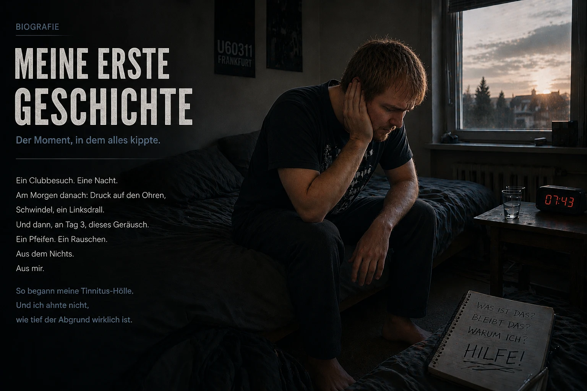

Mein Weg aus der Tinnitus-Hölle (Die Kurzversion)
Hallo, mein Name ist Dustin Müller.
Wenn du gerade auf dieser Seite gelandet bist, steckst du vermutlich in der gleichen Hölle, in der ich damals war. Für alle, die die ausführliche, 9.000 Wörter starke Geschichte meiner Heilung lesen wollen, gibt es hier die komplette Biografie.
Für alle anderen, die schnelle Antworten und den roten Faden suchen: Hier ist die kompakte Zusammenfassung, wie ich meinen Tinnitus damals durch eiserne Logik und Biohacking von 100 % auf 0 % heruntergekämpft habe.
1. Der Crash (Herbst 2011)
Ich war 23 Jahre alt, kerngesund und dachte, mein Körper steckt alles weg. Ein einziger Besuch in einem Frankfurter Techno-Club (U60) direkt vor der Bassbox reichte aus, um den Stecker zu ziehen. Am Morgen danach wachte ich zunächst „nur" mit extremem Schwindel, dumpfem Druck auf den Ohren und einem massiven Linksdrall auf. Ich dachte, mein Körper regelt das schon. Doch an Tag 3 erwachte das eigentliche Monster: Plötzlich war da dieses infernalische Pfeifen und Rauschen in den Ohren. Mein System war endgültig kollabiert.
2. Das Versagen des Systems („Lernen Sie, damit zu leben")
In meiner Panik rannte ich von HNO zu HNO. Die Antworten, die ich damals bekam, waren ein Schlag ins Gesicht: Mein Gehör sei dauerhaft geschädigt, ich müsse „lernen, damit zu leben". Man riet mir sogar, den Ton mit Musik oder „weißem Rauschen" zu überdecken (Maskierung/TRT) und bot mir bei Bedarf Antidepressiva an.
Rückblickend war diese „Maskierung" für mich ein fataler Ratschlag, der zum zweiten, totalen Crash führte: Im blinden Vertrauen auf die Ärzte hörte ich auf einer Autofahrt zur Schule laut Musik, um mich „abzulenken". Das war der finale Tropfen für meine leeren Zellen. In der Schule setzte plötzlich eine brutale Geräuschempfindlichkeit (Hyperakusis) ein, meine Sicht drehte sich (Vertigo-Salto) und mein Gleichgewichtsorgan überflutete durch den Ionen-Rückstau im Ohr komplett (Morbus Menière-Symptomatik). Ich war völlig isoliert und konnte das Haus nicht mehr verlassen.
3. Der Wendepunkt: Beweis gegen das „Phantom-Geräusch"
Ein Tinnitus-Spezialist wollte mir danach einreden, mein Tinnitus sei nach einigen Monaten nur noch ein „Phantomgeräusch" im Gehirn. Den Gegenbeweis lieferte mir ein Zufall: Bei der Behandlung einer akuten Gehörgangsentzündung in der Uniklinik saugte ein Arzt meine Ohren mit einem lauten Gerät ab. Exakt in dieser Sekunde explodierte mein Tinnitus physisch und punktuell auf diesen Lärmreiz!
Für mich war das die eiskalte Logik: Ein psychologisches Phantomgeräusch reagiert nicht in Echtzeit auf mechanischen Lärm. Mein Tinnitus war nichts Festes. Die defekte Quelle saß immer noch im Ohr – und die Zellen schrien unter jedem neuen Lärm um Hilfe.
4. Das Protokoll der Stille

Weil ich im Krankenhaus (für eine erfolglose Cortison-Therapie) lag, waren meine Ohren durch dicke Mullbinden tagelang komplett von der Außenwelt isoliert. Dort bemerkte ich erstmals eine echte Reduzierung des Tons. Ich zog die Konsequenzen, ignorierte alle ärztlichen Ratschläge zur „Ablenkung" und verbrachte Monate in nahezu absoluter Stille. Keine Musik, keine Kopfhörer, kein Alltagslärm. Mein Tinnitus sank dadurch um ca. 25 %. Doch dann stagnierte die Heilung komplett. Mein Körper steckte fest.
5. Der B12-Funke (Die eiskalte Deduktion)
Der absolute Durchbruch passierte wieder durch einen Vorfall in der Familie. Mein Vater spritzte sich wegen einer Nervenerkrankung hochdosiertes Vitamin B12 und blühte regelrecht auf.
Da fiel bei mir der analytische Groschen: Ich war seit meinem 15. Lebensjahr Vegetarier UND hatte lange Zeit unter einer schweren Gastritis (Magenschleimhautentzündung) gelitten. (Diese Gastritis hatte ich übrigens erst kurz zuvor durch Mineralerde, Probiotika und Flohsamenschalen besiegt – der erste Beweis, dass Ärzte sich irren können!). Die Kombination aus fleischloser Ernährung und krankem Magen war die perfekte Blaupause für einen massiven B12-Mangel.
Getrieben von dieser Logik ließ ich mir von meinem Vater ebenfalls eine Injektion in den Muskel geben. Wichtig: Ich rate ausdrücklich davon ab, das ohne ärztliche Begleitung nachzumachen. Am nächsten Morgen war mein Tinnitus massiv leiser (ca. 40 % Verbesserung)! Meine Erkenntnis: B12 ist der Haupttreibstoff für die ATP-Produktion. Meine Zellen hatten durch den Lärm ihr letztes ATP verbrannt. Die Spritze flutete meine Zellen mit Energie, der „zelluläre Motor" sprang wieder an, und in der Nacht konnte mein Körper reparieren.
6. Der fehlende Baustoff (Zellmembranen & Myelin)
Trotz des B12 stürzte die Lautstärke meines Tinnitus im Laufe des Tages immer wieder ab. Der Grund? Mein Akku lud zwar, aber die physische Struktur der Zellen war noch immer kaputt.
Durch eine erneute, schmerzhafte Krise (eine Gallenkolik) stieß ich zufällig auf Lecithin-Granulat, das mir gegen die Kolik half. Wichtig: Bei Gallensteinen unbedingt ärztliche Begleitung suchen – das hier ist meine ganz persönliche Erfahrung in einer akuten Situation, kein Behandlungsrat. Nur drei Tage nach der ersten Einnahme von Lecithin sank mein Tinnitus plötzlich auf 60–65 % Verbesserung!
Die Biologie dahinter war für mich faszinierend: Lecithin (Phospholipide) ist nicht nur wichtig für die Nervenummantelung (Myelinschicht), sondern der elementare Hauptbaustoff für jede einzelne Zellmembran. Durch den massiven oxidativen Lärm-Stress in der Disco waren die Zellwände meiner überlasteten Hörzellen regelrecht brüchig und durchlässig geworden. B12 lieferte die Energie (ATP), Lecithin lieferte den Zell-Zement, um die kaputten Haarzellen physisch wieder abzudichten und den Wackelkontakt am Hörnerv zu flicken.
7. Das „Carpet Bombing" (Der 100%-Sieg)
Um den Flaschenhals endgültig zu durchbrechen, startete ich ein gnadenloses orthomolekulares „Carpet Bombing". Ich versorgte meinen Körper mit allem, was er für die Zellreparatur brauchte:
- Hochdosierte B-Vitamine (B1, B2, B3, B5, B6, B9, B12) als Bypass um meinen damals noch angeschlagenen Magen
- 30 Gramm Lecithin
- Aminosäuren und 3 Gramm feinstes Omega-3-Öl
- Vitamin C, Mineralstoffe (Zink, Magnesium) und Vitalstoffkonzentrate (LaVita, Dr. Rath)
Das Fade-Out:
Mit dieser massiven Nährstoffversorgung und der strikten Einhaltung von Stille veränderte sich die Dynamik endgültig. Der Ton wurde morgens immer leiser, die Einbrüche am Abend wurden kürzer. Bis zu dem einen Morgen, an dem ich aufwachte, mir die Ohrenstöpsel zur Kontrolle tief in die Ohren drückte und auf absolute, befreiende Totenstille traf. Der Dimmschalter stand auf Null.
Meine Myelinschicht war repariert, das Aktin-Gerüst meiner Hörzellen stand wieder, und mein Gehirn hatte den Notfall-Verstärker abgeschaltet. Die Biologie hatte gesiegt.
Nimm es selbst in die Hand
Wenn du in der gleichen Dunkelheit steckst, möchte ich dir zeigen, dass es Hoffnung gibt. Ich habe auf dieser Website exakt dokumentiert, welche biologischen Zusammenhänge ich für mich entdeckt habe und welche Biohacking-Schritte meinen eigenen Körper aus dem Opfer-Modus geholt haben. Was du mit diesen Informationen machst und wie du die Biologie deines eigenen Körpers – idealerweise in Absprache mit deinem Arzt – unterstützt, liegt ganz in deiner Hand. Mein Weg ist meine Geschichte. Es ist an der Zeit, dass du deine eigene schreibst.
Wichtiger Hinweis:
Was du hier liest, ist mein persönlicher Erfahrungsbericht. Jeder Körper und jede Geschichte ist anders.

Der Absturz ins CFS und der Niacin-Flush
Die fatale Kettenreaktion: Der Absturz ins CFS
Wer denkt, nach der Heilung meines ersten Tinnitus war alles gut, der irrt sich. Dieser lebensbedrohliche Absturz war allerdings nicht der „Preis" für die Tinnitus-Heilung, sondern eine fatale Kettenreaktion, die mein System völlig aus dem Gleichgewicht brachte.
Mein Körper steuerte geradewegs auf den Abgrund zu, gefangen in einem tückischen biologischen Paradoxon: Ich peitschte mich mit einem exzessiven „Overdrive"-Lebensstil hoch. Genau diese überschüssige Energie nutzte mein Körper, um den Tinnitus erfolgreich zu heilen – aber der Preis war fatal. Ich verbrannte dabei unwissentlich meinen allerletzten zellulären Akku.
Ein Mix aus einem unaufgearbeiteten Hintergrund-Trauma, chemischen Cortison-Nachwirkungen, dieser pausenlosen zellulären Überreizung und einem durch aggressive Antibiotika (und Säureblocker) komplett zerstörten Darm riss mir endgültig den Boden unter den Füßen weg.
Als dann noch das Epstein-Barr-Virus (Pfeiffersches Drüsenfieber) dazukam, kollabierte mein System völlig. Die Diagnose: Chronisches Erschöpfungssyndrom (CFS). Ich war über ein Jahr lang nahezu bettlägerig. Die Mitochondrien (Zellkraftwerke) stellten die Energieproduktion (ATP) nahezu komplett ein.
Die 6.800-Euro-Sackgasse und meine größte Arroganz

In meiner Verzweiflung kaufte ich wahllos alles auf. Von amerikanischen Big-Playern wie Life Extension oder Thorne über teure Vitamin-C-Infusionen bis hin zu KPU-Behandlungen und Hormonersatztherapien. Ich versuchte ein simuliertes Höhentraining (IHHT), das ich wegen Panik abbrechen musste, und stand kurz vor der Einweisung in eine CFS-Spezialklinik.
In diesem einen Jahr verbrannte ich für diesen Wahnsinn ungelogen rund 6.800 Euro. Das Resultat? Absolut null. Mein Körper nahm nichts davon an.
Die tragikomische Ironie: Während meiner nächtlichen Recherchen stieß ich auf die Website der deutschen Firma FitLine. Ich war genau 4 oder 5 Sekunden dort, sah die Aufmachung und dachte voller Arroganz: „Was ist denn das für ein bescheuerter Name für ein trendiges Sportgetränk? Ich brauche harte Medizin, keine bunten Säfte." Ich übersah dabei völlig die 100 % Geld-zurück-Garantie. Mein Ego und mein Halbwissen kosteten mich viele weitere Monate in der CFS-Hölle.
Sommer 2014: Der Niacin-Flush und der zelluläre Neustart
Am absoluten Tiefpunkt (Sommer 2014) war ich zu 98 % bettlägerig. Da spülte mir YouTube das Video eines Heilpraktikers in den Feed, der die Dinge unfassbar ganzheitlich und kompetent erklärte. Als ich sah, dass er gerade mal 30 Kilometer von mir entfernt war, schleppte ich mich mit letzter Kraft dorthin, da meine Mutter sich bereits strikt weigerte, mich noch zu weiteren Ärzten zu fahren.
Er mischte mir ein Pulver in Wasser an – eine leuchtend orangefarbene Flüssigkeit. Es war exakt das FitLine-Set, das ich ein halbes Jahr zuvor arrogant weggedrückt hatte!
Was nach 6 bis 8 Minuten passierte, war der absolute Wahnsinn: Es löste einen massiven Niacin-Flush aus. Mir wurde im gesamten Körper extrem warm, eine gigantische Durchblutung schoss durch meine Adern, und meine Haut rötete sich. Zum ersten Mal seit über einem Jahr spürte ich echte, physische Energie in meinen Zellen.
Das wahre Problem: Mein Körper befand sich in einer dreifachen Blockade. Erstens war mein Magen-Darm-Trakt durch den Dauerstress und die Antibiotika komplett aus dem Gleichgewicht (Dysbiose). Zweitens fehlte meinem Darm schlichtweg die zelluläre Energie (ATP), um feste Kapseln zu verdauen. Und drittens waren meine Zellen durch den anaeroben Notstrombetrieb derart übersäuert, dass kaum mehr Nährstoffe eingelassen wurden. Ich war zellulär verhungert bei vollen Tellern.
Das flüssige, hoch bioverfügbare Nährstoff-Set durchbrach diese massive Aufnahme-Blockade plötzlich.
Ich legte meinen Stolz ab und nahm die Produkte ab sofort konsequent jeden Tag. Die Ergebnisse waren fast schon surreal:
- Nach 20 Tagen: Ich konnte wieder ganz normal Treppen steigen.
- Nach 2 Monaten: Die Bettlägerigkeit war verschwunden, ich konnte wieder kräftig Fahrrad fahren.
- Nach 3 bis 4 Monaten: Ich absolvierte einen Computerkurs ohne physischen Zusammenbruch.
- Nach knapp 2 Jahren: Ich war körperlich fitter als je zuvor und arbeitete bei Rewe online im extrem harten Knochenjob – inklusive freiwilliger Doppelschichten!
Das verrückteste Experiment meines Lebens (Ende 2016)

Dieses hart erkämpfte Wissen über zelluläre Energie war der fehlende Schlüssel zur endgültigen Tinnitus-Matrix. Da mein zellulärer ATP-Tank durch meine Nährstoff-Routine nun permanent auf 200 % Kapazität geladen war, ließ mich die Logik nicht los: Beim ersten Tinnitus hatte ich kaum Energie und musste mich ein halbes Jahr im stillen Zimmer einsperren. Was passiert, wenn mein Körper jetzt, mit dieser extremen Energie, erneut von Lärm getroffen wird? Repariert er sich dann quasi „während der Fahrt" im Alltag?
⚠️ Wichtiger Hinweis: Bevor ich dieses Experiment beschreibe, will ich klarstellen, dass ich dabei auch bleibende Schäden hätte erleiden können. Auf keinen Fall nachmachen.
Ich fasste einen für jeden Arzt absolut wahnsinnigen Entschluss: Ich provozierte mit voller Absicht einen zweiten Tinnitus, um meine Theorie am eigenen Leib zu beweisen.
An Silvester 2016 legte ich meine schützende Vorsicht komplett ab und feierte stark (einerseits weil ich eben das Experiment wagen wollte und andererseits weil ich immer noch sehr starken Lebenshunger in mir spürte da meine CFS Heilung ja kaum 2 Jahre her war). Während dieser Nacht spürte ich nur ein temporäres Warnsignal (Druckgefühl). Das allerdings war dann der Impuls, es auf die Spitze zu treiben. Wochenlang beschoss ich meine Ohren exzessiv mit lauter Kopfhörer-Musik – selbst als das Hören schon zur reinen, physischen Schmerzbelastung wurde. Mein zellulärer Instinkt schrie auf, aber mein Verstand ignorierte den Schmerz.
Bis zu dem einen Abend: Ich saß am PC, setzte die Kopfhörer auf – und in der plötzlichen Stille hörte ich das feine Piepsen auf dem linken Ohr. Der Ton war zurück. Einerseits blankes Entsetzen, andererseits wahnhafte Faszination.
Um das „Monster" für meinen Test so richtig hochzuzüchten und nicht direkt wieder durch mein 200-%-ATP-Schutzschild zu ersticken, traf ich eine eiskalte, hochgradig riskante Entscheidung: Ich ging in eine komplette Nährstoff-Karenz (Abstinenz) und setzte mein FitLine-Set und mein Lecithin absichtlich ab.
Der Absturz, die Panik und die Live-Beweise
Es dauerte anderthalb bis zwei Monate, bis mein System unter dieser Dauer-Provokation und dem fehlenden Schutzschild endgültig zusammenbrach. Der Tinnitus kehrte mit brutalen 75 % der ursprünglichen Lautstärke zurück, begleitet von einem völlig neuen Klang-Chaos (typisches Sinus-Piepsen, bizarres Morse-Code-Signal, tiefes Zischen und eine Sirene).
Als ich abends im Bett lag, holte mich die Realität knallhart ein. Die Geräusche waren so ohrenbetäubend, dass die nackte Panik in mir hochschoss: Habe ich mir durch dieses dämliche Experiment mein Leben vielleicht endgültig ruiniert?
Doch bevor ich den Spieß umdrehte, testete ich mein System buchstäblich an seiner absoluten Belastungsgrenze:
- Der Kiefer-Hals-Test: Durch ausladende Kopf- und Kieferbewegungen konnte ich das Geräusch hundertprozentig in Klang und Lautstärke beeinflussen!
- Der Rausch-Test (Beweis gegen die Maskierung): Ich beschallte mich 2–3 Minuten mit extrem lautem, weißen Rauschen (genau das, was Ärzte zur Maskierung empfehlen). Zog ich die Kopfhörer ab, herrschte für ein paar Sekunden absolute Totenstille, bevor der Tinnitus lauter und aggressiver als je zuvor aufheulte. Mein eiskalter Beweis am eigenen Körper: Rauschen zwingt die kranken Haarzellen, pausenlos Ionen zu pumpen. Zieht man den Kopfhörer ab, ist der Akku der Zelle restlos entleert – sie ist für Sekunden physisch tot und „stumm" (Refraktärzeit). Sobald sie minimal Energie nachlädt, knallt das Notsignal doppelt so laut zurück!
- Der Klatsch-Test (Mechanischer Schock): Ein festes Klatschen meiner Hände direkt vor dem Ohr ließ den Tinnitus in exakt dieser Sekunde wütend aufheulen.
Heilung im Alltag (Ohne „Mönch-Modus")
Am nächsten Morgen reichte es. Das Experiment war am Höhepunkt. Ich startete meine Rückkehr mit meinem Heilungs-Stack:
- Das komplette FitLine-Set (Activize, Restorate, Basics und Omega-3 mit Q10).
- Lecithin-Granulat aus der Drogerie.
Eine sehr entscheidende Sache fehlte diesmal absichtlich: Ich nahm keine bitteren Aminosäuren-Pulver mehr ein! Die geniale System-Biologie dahinter: Beim ersten Tinnitus litt ich unter einer massiven chronischen Gastritis und konnte Proteine nicht aus normaler Nahrung aufspalten. Heute, Jahre später, war meine Verdauung durch die Darmsanierung perfekt intakt. Mein gesunder Magen-Darm-Trakt konnte die benötigten Aminosäuren für die Myelinschicht problemlos selbst aus meiner normalen Nahrung extrahieren.
Der größte Unterschied: Ich hatte absolut keine Lust, mich wie beim ersten Mal vom Leben abzuschotten. Mein Lebenshunger war nach dem CFS-Sieg einfach zu groß. Ich wählte einen intelligenten Kompromiss: Ich mied extreme Lärmspitzen konsequent (kein voll aufgedrehtes Autoradio, keine Kopfhörer, keine Discos), zog mich aber nicht komplett zurück. Ich ging weiterhin einkaufen, auf die Kirmes, ins Kino und lebte relativ normal weiter.
Der „Hä?!"-Moment und die absolute Stille
Das Unfassbare geschah: Schon innerhalb der ersten Wochen (zwischen Woche 2 und 3) merkte ich plötzlich: Alter, der Ton reagiert ja jetzt schon!
Es gab eine spürbare Reduzierung und Ausdünnung der Geräusche. Zuerst verschwand dieses völlig neue Zischen im linken Ohr restlos, dann dünnte sich auch der permanente Pfeifton spürbar aus. Ich saß völlig verdutzt da und dachte: „Hä?! Okay, krass… Ich lebe hier eigentlich noch komplett normal vor mich hin, vermeide nur die starken Lärmspitzen, und trotzdem reagiert das Ganze schon?!"
Mein Heilungsprozess zog sich über dreieinhalb bis knapp viereinhalb Monate. Es war ein systematisches Ausknipsen der Frequenzen:
Zuerst meldete sich das rechte Ohr ab und war nach etwa zwei Monaten komplett geheilt. Auf dem linken Ohr verblassten die Sirene und das tiefe LKW-Brummen, bis nur noch der hochfrequente Sinus-Ton (der absolute Endgegner) blieb.
Wie schon beim ersten Tinnitus waren die Morgenstunden der entscheidende Indikator. Es stellte sich so dar, als würde sich ein Regler immer weiter in Richtung Nulllinie bewegen. Gegen Ende des dritten Monats war der Ton abends so leise geworden, dass ich ihn nur noch wahrnehmen konnte, wenn ich im völlig stillen Zimmer Ohrenstöpsel trug oder im komplett leisen Badezimmer saß.
Um den Sack endgültig zuzumachen, holte ich mir noch einmal spezielle Vitamin-B12-Tropfen, die ich mir jeden Tag direkt unter die Zunge tropfte, um dem System über die Mundschleimhaut den allerletzten Kick zu geben.
Und dann, irgendwann in den darauffolgenden Wochen, war er vollständig weg. Er verschwand. Restlos. Zu 100 %.
Ich hatte den ultimativen, gefährlichsten Stresstest meines Lebens bestanden. Ich wusste jetzt mit eiskalter, absoluter Sicherheit: Die Heilung von lärmbedingtem Tinnitus ist kein Zufall, kein Glück und kein mystisches Schicksal. Sie war für mich das logische, unausweichliche Resultat, als ich meiner Zelle exakt das gab, was sie brauchte, um sich selbst zu reparieren – und das sogar mitten im normalen Alltag.
Ein kurzes, ehrliches Wort zum Schluss (Real-Talk)
Ich weiß ganz genau, wie sich diese gesamte Krankheits- und Heilungsgeschichte für einen Außenstehenden lesen muss. Wenn ich all das nicht am eigenen Leib erlebt hätte – die Kaskade an absurden „Zufällen", die anfängliche Rebellion gegen den HNO-Arzt, den tiefen Fall ins CFS, die gescheiterten 6.800-Euro-Therapien und schließlich diesen verrückten „Matrix-Moment", in dem mir der YouTube-Algorithmus den rettenden Heilpraktiker nur 30 Kilometer entfernt auf den Bildschirm spült… ich würde es wahrscheinlich selbst als billiges Hollywood-Skript oder als ausgedachtes Märchen abtun. Es klingt einfach zu verrückt, um wahr zu sein.
Aber genau deshalb lege ich hier meine Karten vollkommen offen auf den Tisch. Das hier ist keine erfundene Heilungsgeschichte, kein Marketing-Gag und erst recht keine haltlose Esoterik. Das ist eiskalte, physikalische und zelluläre Wahrheit. Ich besitze jeden einzelnen physischen Beweis für diese Hölle und für diese Heilung: Meine ärztlichen Audiogramme mit den massiven Frequenzeinbrüchen, die Laborberichte, die Diagnosen und die Rechnungen der Kliniken und Therapeuten.
Ich erzähle dir das alles nicht, um dich zu unterhalten. Ich erzähle es, weil ich das verdammte System entschlüsselt habe – und weil dieses Wissen dein Gehör und deine Nächte retten kann.
📖 Du willst die ganze Geschichte im Detail?
Das war die Kurzversion in 2 Akten. Die vollständige Geschichte – jede Audiometrie, jeder verzweifelte HNO-Besuch, jeder Durchbruch, jede chemische Reaktion bis ins Detail – habe ich in der ausführlichen Langversion aufgeschrieben. Rund 14.000 Wörter, ehrlich und ungefiltert. Mach dir einen Tee. ☕
👉 Hier geht's zur Langversion: Teil 1: Die Höllenfahrt · Teil 2: Der Härtetest